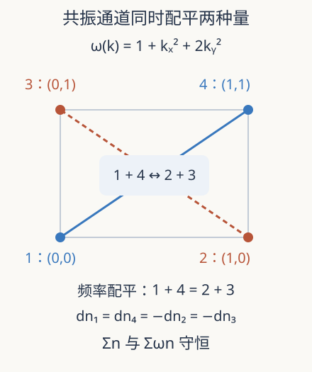

本页目录
动力学极限 04 · 波动理学：共振如何把波方程变成谱输运
粒子靠相撞交换速度，波的 Fourier 模态没有硬球边界，为什么也会出现“碰撞方程”？先修动力学闭合、Fourier 展开与复数；本讲的谱占据是强度统计，不是波函数本身。
1. 从振幅到统计量，又丢掉了什么
把周期波场写成 \(u(t,x)=\sum_k\widehat u_k(t)e^{ik\cdot x}\)。线性传播中每个模式只积累相位 \(e^{-i\omega(k)t}\)，因此模平方不变。弱非线性会让模态耦合，研究者常关心谱占据 \(n_k=\mathbb E|\widehat u_k|^2\)，即许多随机初始波的平均强度。
一个重要原型是立方非线性 Schrödinger 方程 \(i\partial_tu=-\Delta u+\alpha|u|^2u\)，\(\alpha\) 很小。对 \(n_k\) 求时间导数会出现四个振幅的联合期望，不会自动成为只含 \(n\) 的闭合方程。随机初相、相关控制与大体积极限的角色，与粒子边缘层级十分相似，但技术对象和共振几何不同。
2. 为什么相位失配的相互作用会被压低
把线性相位提出后，四波相互作用带有 \(e^{i\Omega t}\)，其中
同时空间积分要求波矢配平 \(k_1+k_4=k_2+k_3\)。一个非共振项在时间 \(T\) 内积累
其模不超过 \(2/|\Omega|\)；若 \(\Omega=0\)，积分却是 \(T\)。因此长时间更容易看见共振和近共振贡献。但不能直接把所有非零 \(\Omega\) 项删掉：当 \(\Omega\) 随尺度趋零时，上界可能很大，模式数量也随体积增加。
在对连续频率积分的合适弱意义下，\(T^{-1}|\int_0^T e^{i\Omega s}ds|^2\) 趋向 \(2\pi\delta(\Omega)\)。这是共振面上碰撞积分的一个来源，不是对每个单独频率逐点成立的等式。二阶弱相互作用常给动力学时间 \(T_{\rm kin}\sim\alpha^{-2}\)，却仍需指定盒子大小与 \(\alpha\) 怎样共同变化。

3. 一个真正守恒的四模通道
选 \(k_1=(0,0),k_2=(1,0),k_3=(0,1),k_4=(1,1)\)，课堂色散为 \(\omega(k)=1+k_x^2+2k_y^2\)，于是 \(\omega=(1,2,3,4)\)。两个配平条件都成立。只保留通道 \(1+4\leftrightarrow2+3\)，把碰撞系数和时间单位归一化为 1，定义
这是经典四波动力学碰撞项的一种保守截断；没有量子统计中的额外“加一”因子，也不是原始 NLS 的四个振幅方程。取 \(n(0)=(1,2,2,1)\)，第一项为 8、第二项为 4，所以 \(J=4\)：较大的两个中间占据先下降，两个较小的上升。
逐项相加得 \(d\sum n_i/dt=0\)；按频率加权得 \(d\sum\omega_in_i/dt=(1-2-3+4)J=0\)。波矢动量也因同样配平而守恒。守恒来自通道结构，不能在积分之后通过把四条曲线任意归一化来补造。
4. 平衡不是四条曲线一定相等
对正占据，定义 \(S=\sum_i\log n_i\)。把碰撞项写成
可得 \(\dot S=JB=(\prod_i n_i)B^2\ge0\)。因此详细平衡要求倒数配平，而不是每个 \(n_i\) 相等。若 \(n_i=1/(a+b\omega_i)\) 且分母为正，共振条件使 \(B=0\)，得到 Rayleigh–Jeans 型平衡实例。
单通道还保存 \(n_1-n_4\)、\(n_2-n_3\)，这些额外约束限制了它能到达的平衡。完整波谱包含很多共振通道，不能拿四模态的长期状态宣布整个系统热化或形成某种级联。当前实验也没有外部注入和高频耗散，所以不是湍流稳态能量通量的演示。
默认对称初值恰好可给独立解析检查。设 \(n_1=n_4=a,n_2=n_3=b\)，则 \(a+b=3\)。差 \(d=b-a\) 满足 \(\dot d=d^3-9d\)，\(d(0)=1\)，所以
实验数值积分与这条闭式解比较，既检查时间单位，也检查碰撞项系数和符号。守恒量单独通过并不足以证明积分正确，因为零向量场也会保存它们。
5. 研究窗口：大盒子与长时间必须一起读
Deng–Hani 2021 首稿在指定弱非线性与大盒子缩放下，从维数至少 3 的立方 NLS 严格推导波动力学方程。2023 年关于缩放律的工作扩展了该模型内的适用尺度；其“全范围”必须连同论文所定义的模型与缩放族理解，不意味着任何非线性波方程都已涵盖。
2023 年长时间首稿、2024 修订将论证延长到相应波动力学解的寿命范围。研究难点包括高阶图展开、近共振、相关传播和累积误差，而不是只观察某个四模通道的熵增。动力学方程存在多久与微观波方程的性质是不同问题；这些工作也没有解决 Navier–Stokes 的全局正则性。
这条路线与前面的粒子到流体共享一个重要标准：先给微观模型、初始统计类、缩放、时间和观测量，再谈有效方程。任何一项改变，都可能需要新定理，不能把图中“能量守恒”当成普适性证明。
近共振与极限次序的一个判据
对固定非零失配，时间积分有界；但若选 \(\Omega=c/T\)，则它等于 \(T(e^{ic}-1)/(ic)\)，仍是时间长度的量级。这一行手算说明：先固定离散频率再取长时间，与同时扩大盒子、让频率格更密，并不是同一个操作。恰好共振集合之外的近共振带也可能携带有限贡献。
随机初相同样需要定量化。只有二阶强度已知时，四阶相关不一定由它决定；随时间生成的相关也不能被一次初值假设永久消去。完整推导要让这些误差在动力学时间内仍受控，才能获得闭合。四模实验直接从已闭合的通道方程起步，故它能够检验守恒与详细平衡，却没有承担从振幅系统证明闭合的任务。
读到“长时间”时，也要先问是物理时间、重标度后的动力学时间，还是极限方程的解寿命。把它们都写成同一个 t 而不说明缩放，容易把有条件的长时间逼近误读成任意模型的永远有效。
6. 实验与迁移
先预测四个初始占据全相等时是否仍有净流，再分别改变四个值。后备：\((1,2,2,1)\)，用上面的差变量解析式算到 \(t=1\)。
默认静态结果：初始 \(J=4\)，总谱占据 6，总能量 15。\(t=1\) 时约为 \((1.49993455,1.50006545,1.50006545,1.49993455)\)，\(S(1)-S(0)\approx0.235566068\)。实验采用步长 \(0.0005\) 的 RK4，显示到无量纲时间 1。
题一。 保留相同的 \(J\) 与符号，却把第四个频率改成 5，能量是否还守恒？
独立作答后核对
能量导数变成 \((1-2-3+5)J=J\)，一般不为零。新频率不再满足共振，不能保留旧通道并宣称是同一个保守动力学。正确模型需要重新检查允许的相互作用。
题二。 令 \(n_i=1/\omega_i\)，四个占据不相等。计算净流并解释。
独立作答后核对
倒数差为 \(1+4-2-3=0\)，所以 \(J=0\)。详细平衡不要求等占据。此例只检验所保留通道；判定完整动力学平衡还要核对其他通道及可积性。
速查与一手来源
| 机制 | 数学对象 | 边界 |
|---|---|---|
| 共振 | 波矢与频率同时配平 | 近共振不能随意删 |
| 四波净流 | \(J=(\prod n_i)B\) | 教学单通道截断 |
| 熵产生 | \(\dot S=(\prod n_i)B^2\) | 正占据、指定模型 |
实际访问 2026-09-08：Deng–Hani，完整推导，首稿 2021-04-22、v4 2023-02-17；缩放律范围，首稿 2023-01-17、v2 2023-03-20；长时间推导，首稿 2023-11-16、v2 2024-04-07。作为相邻研究窗口可对照硬球长时间推导，2024 首稿／2025 修订；它借鉴相关控制方法，结论仍针对不同微观模型。